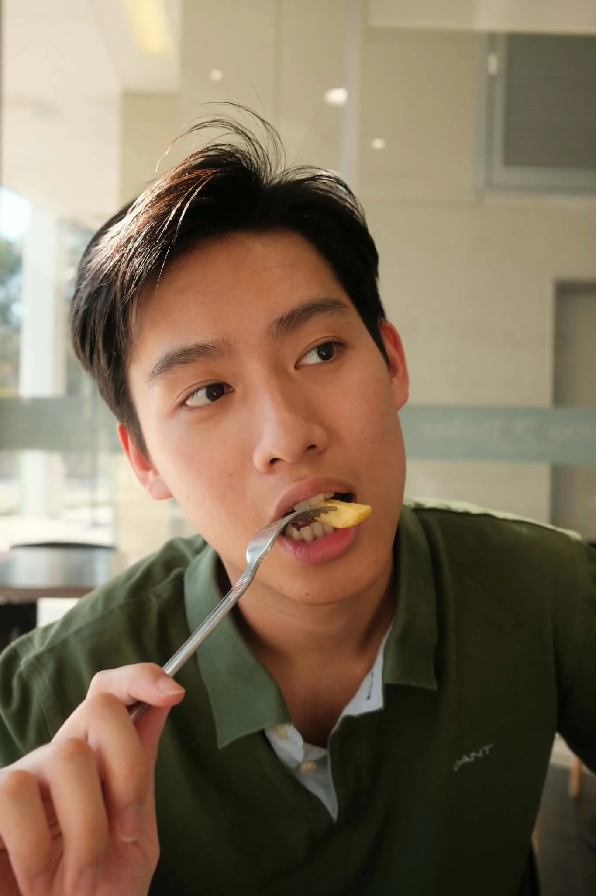
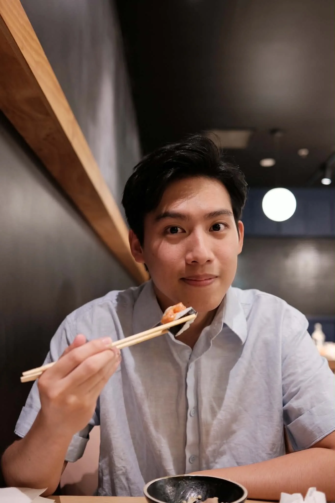
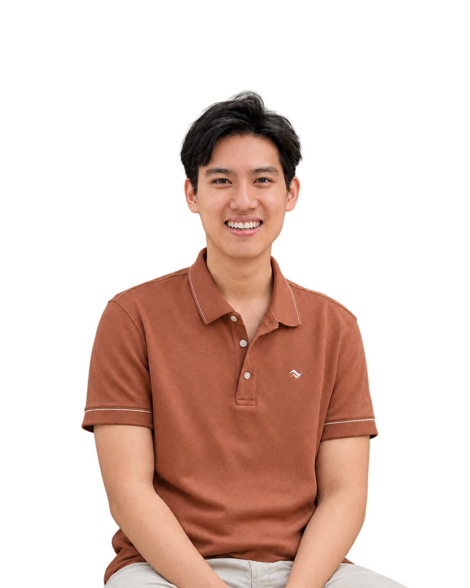

About Vigo · A little more personal
A curious mind.
A playful side.
Hi, I’m Vigo. I grew up in Biên Hòa, Đồng Nai, Vietnam, and now study Data Science at QUT in Brisbane.
Outside my projects, I’m into good food, travelling, putting an outfit together and taking photos of the everyday bits in between. I’m easygoing, open-minded, and quite happy to look a little silly.
Biên Hòa roots. Brisbane now.


The everyday things
Good food.
A little personality.
I enjoy trying somewhere new to eat and making an occasion of it. The food, the outfit, the photos — I like the whole experience.
I care about how things look, but I don’t need every photo to be perfectly serious. The candid frames belong in the album too.
A bit of style. A sense of humour.




A change of scenery
New places.
More to notice.
I like travelling for the mix of experiences: trying food, exploring a place and finding a moment worth a photo. Đà Nẵng, Huế and Hội An are part of that story.
I’m drawn to the everyday scenes as much as the planned stops. There’s room to slow down, look around and enjoy something unfamiliar.
The person you’d work with
Open to people.
Open to feedback.
I like a laugh and a relaxed conversation. I also try to make space for someone else’s point of view: listen first, ask when I’m unsure, and stay open to changing my mind.
That’s the attitude I bring to a team. I want to understand what’s needed, contribute what I can, and use feedback to make the next version better.
I’m still learning, and I’m looking for a Data or Cloud Engineering internship or graduate role with a team I can grow with.


A little context
Still learning.
Building along the way.
Truong Lieu Dong (Vigo) Dang
Data & Cloud Engineering · Brisbane, Australia
Queensland University of Technology
Bachelor of Data Science
Minor: Advanced Computing for Data Science
Expected graduation: July 2027
2024 Executive Dean’s Commendation for Academic Excellence (Semester 2 teaching period cluster)
Education & project experience Download résumé PDFTechnical background Skills and implementation details
My projects span desktop prediction workflows, asynchronous cloud processing and source-linked retrieval.
Programming & dataPython, SQL, R, C++17, C#, JavaScript/Node.js; Pandas, NumPy, MySQL, DynamoDB
Machine learningscikit-learn, XGBoost, LightGBM; classification, regression, model evaluation
Deep Learning & AIPyTorch, TensorFlow; neural networks, embeddings, RAG
Cloud & backendAWS S3, Lambda, API Gateway, Cognito, SQS, ECS/Fargate, CloudWatch; REST APIs, Docker
Tools & deliveryGit/GitHub, Linux, automated testing, Power BI, PyQt6, data visualisation
My deep learning work includes RGB and elevation inputs, a TensorFlow/Keras segmentation model and tiled inference for drone imagery.
View the segmentation implementation